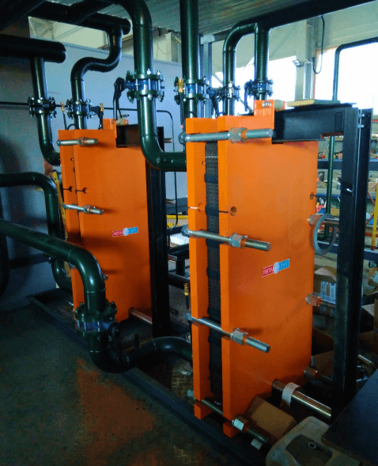

<h2 class="info__paragraph-title">Объект</h2>
<p class="info__paragraph">
  КОНДИТЕРСКИЙ КОМБИНАТ «КУБАНЬ»
  г. Тимашевск
</p>

<h2 class="info__paragraph-title">Оборудование</h2>
<ul class="bem__list info__list info__paragraph">
  <li>Пластинчатый теплообменник <span class="span_color_orange">ТИ52-77</span></li>
  <li>Мощность: 3,5 Гкал/ч</li>
  <li>Назначение: ГВС (горячее водоснабжение)</li>
</ul>